Explore Madrid
A Brief History
Madrid became the capital of Spain in 1561 under Philip II, replacing Valladolid. The Royal Palace, Plaza Mayor, and Prado Museum expanded through the Bourbon monarchy and 19th-century reforms. The city remained the seat of government through the Civil War and Franco era. Retiro Park and Gran Vía boulevard date from the late 19th and early 20th centuries. Today it hosts national ministries and museums.
Attractions Map
Top Sights & Activities
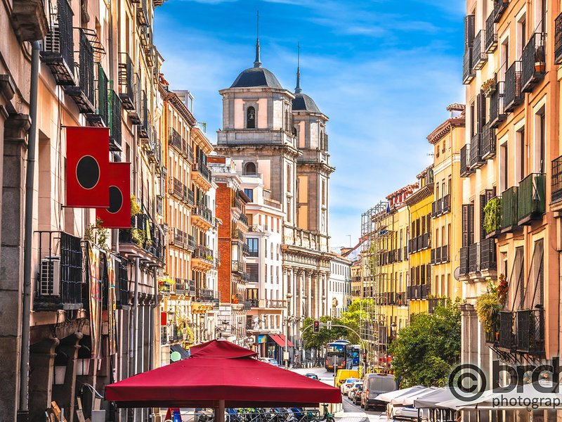
Plaza Mayor
Plaza Mayor, also known as Madrid de Los Austrias, is a historic square in Madrid that served as the center of power for the Habsburgs from 1516 to 1700. The grand plaza features stately arches and a statue of Philip III at its center. It is surrounded by three-story residential buildings and boasts 237 wrought-iron balconies.
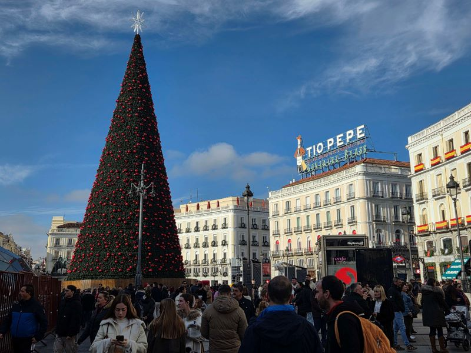
Puerta del Sol
The Puerta del Sol is a public square in Madrid, one of the known and busiest places in the city. This is the centre of the radial network of Spanish roads. The square also contains the famous clock whose bells mark the traditional eating of the Twelve Grapes and the beginning of a new year.
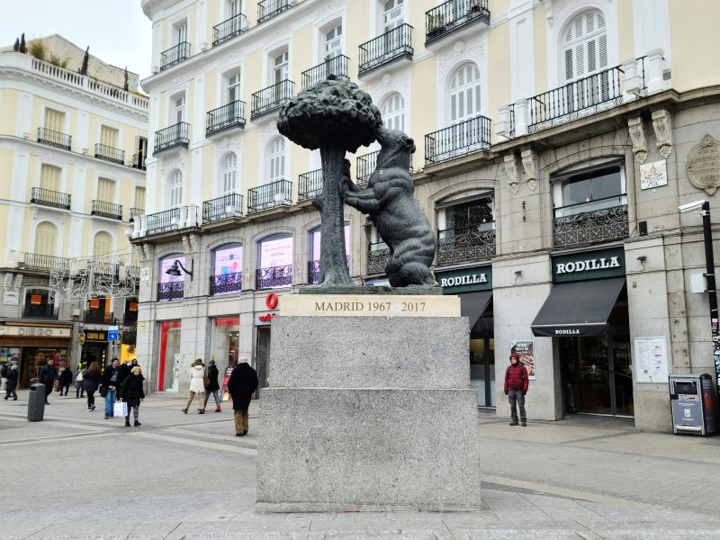
El Oso y el Madrono
The Statue of the Bear and the Strawberry Tree is a sculpture from the second half of the 20th century, situated in the Spanish capital, Madrid. It represents the coat of arms of Madrid and is found on the east side of the Puerta del Sol, between Calle de Alcalá and Carrera de San Jerónimo, in the historical centre of the capital.
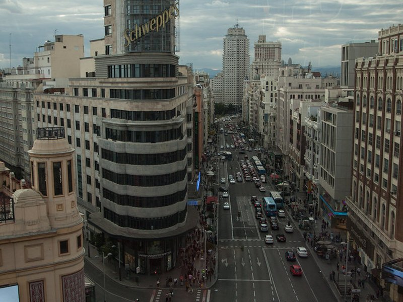
Mirador de El Corte Inglés de Callao
A beautifully situated modern viewing terrace located high above the bustling Gran Vía. It provides sweeping, panoramic views directly over Madrid's historic skyline and famous architectural landmarks. Mirador de El Corte Inglés de Callao is listed among principal sites for Madrid within Spain.
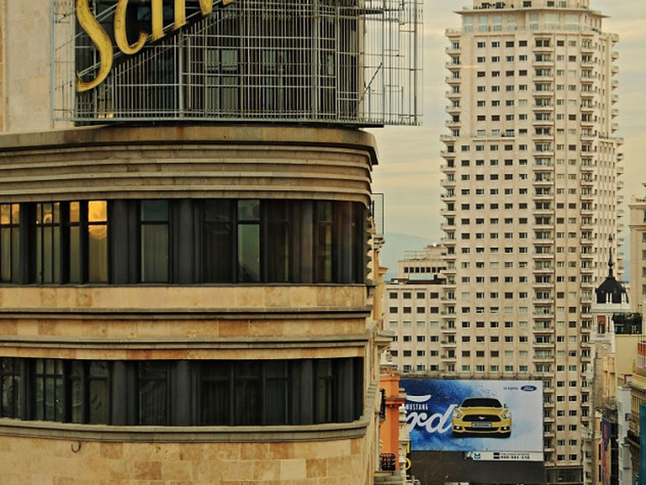
Edificio Carrión
The Gran Vía is a street in central Madrid, Spain. It leads from Calle de Alcalá, close to Plaza de Cibeles, to Plaza de España. The street, sometimes referred to as the "Spanish Broadway", is one of the city's most important shopping areas, with a large number of hotels and large movie theatres.
El Retiro Park
The Retiro Park, also known as Buen Retiro Park or simply El Retiro, is one of the largest city parks in Madrid, Spain. The park belonged to the Spanish monarchy until 1868, when it became a public park following the Glorious Revolution. The park is located at the edge of the city centre, near both the Alcalá Gate and the Museo del Prado, and covers 1.4 km2.
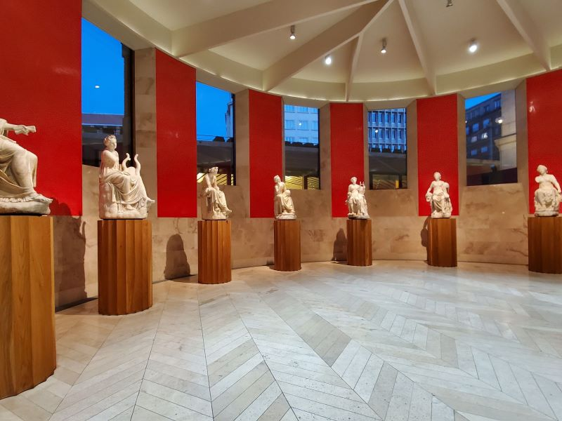
Museo Nacional del Prado
The Museo del Prado, officially known as Museo Nacional del Prado, is the main Spanish national art museum, located in central Madrid. It houses collections of European art, dating from the 12th century to the early 20th century, based on the former Spanish royal collection, and the single collection of Spanish art. Founded as a museum of paintings and sculpture in 1819, it also contains important collections of other types of works.
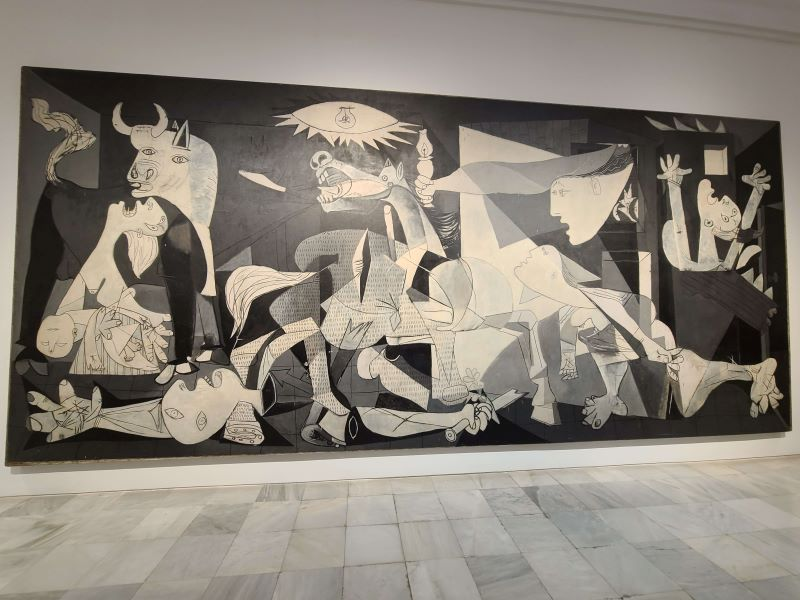
Museo Nacional Centro de Arte Reina Sofía
The Museo Nacional Centro de Arte Reina Sofía is Spain's national museum of 20th-century art. The museum was officially inaugurated on September 10, 1992, and is named for Queen Sofía. It is located in Madrid, near the Atocha train and metro stations, at the southern end of what is known as the Golden Triangle of Art.
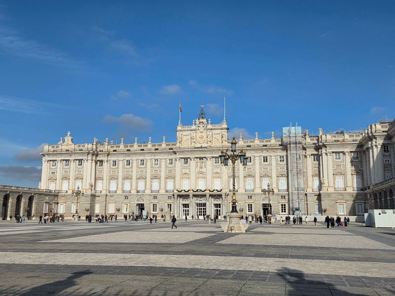
Palacio Real de Madrid
The Royal Palace of Madrid is the official residence of the Spanish royal family and is used primarily for state ceremonies. With over 135,000 m2 of floor space and 3,418 rooms, the Royal Palace of Madrid is the largest palace in Western Europe, the largest royal palace in Europe, and among the largest palaces in the world. The palace is located on Bailén Street in the western part of central Madrid, east of the Manzanares River, and is accessible from Ópera metro station.
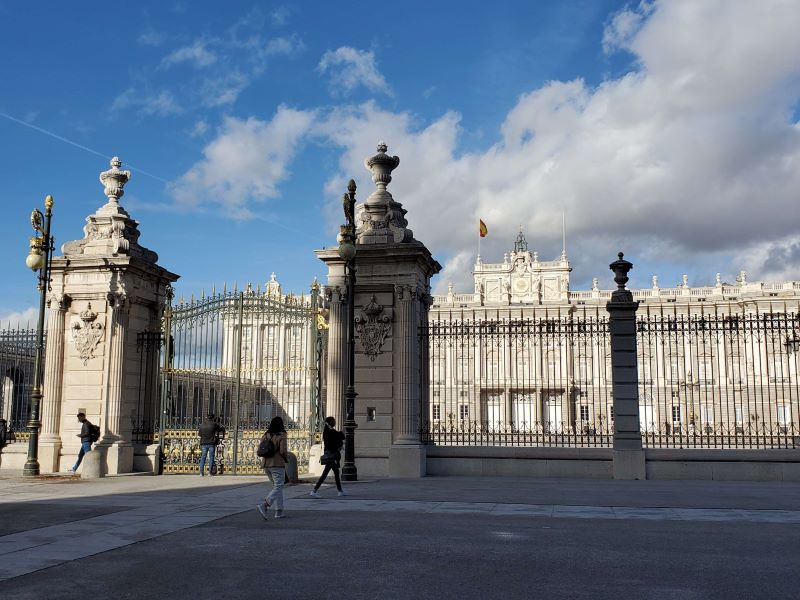
Mirador de la Cornisa del Palacio Real
A beautifully sweeping, scenic,, elevated viewing terrace spectacularly wrapping directly around the grand royal palace. It provides serene, absolutely sweeping, beautiful sunset views gracefully looking out over the lush, vast Casa de Campo parklands.
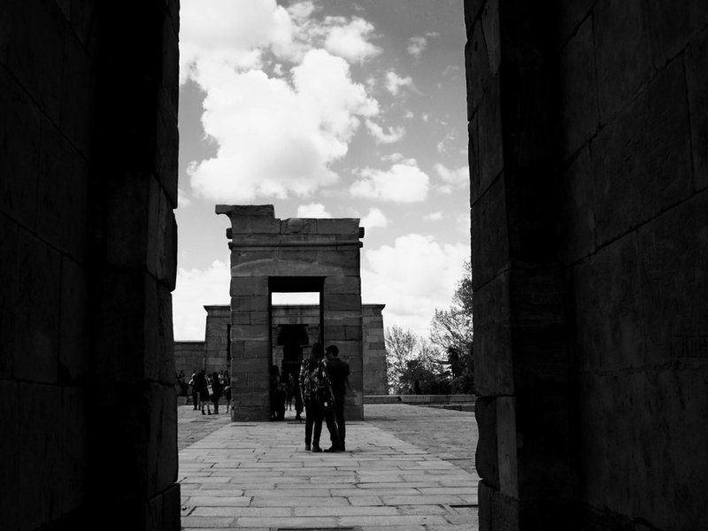
Temple of Debod
The Temple of Debod is an ancient Nubian temple currently located in Madrid, Spain. The temple was originally erected in the early 2nd century BC 15 km south of Aswan, Egypt. The Egyptian government donated the temple to Spain in 1968 as a sign of gratitude for their participation in the International Campaign to Save the Monuments of Nubia.
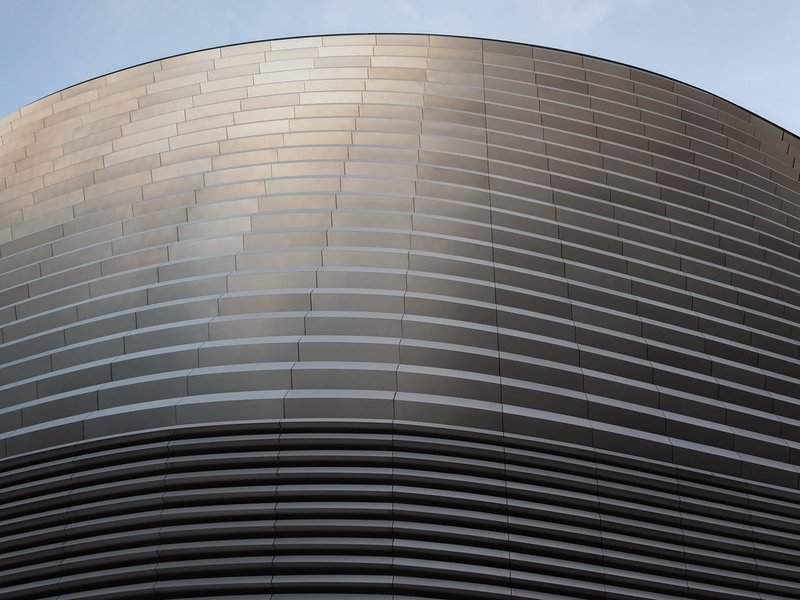
Bernabeu
The Bernabéu also known as Santiago Bernabéu Stadium, is a retractable roof football stadium in El Viso, district of Chamartín, Madrid, Spain. With a seating capacity of 83,186 following its extensive renovation completed in late 2024, the stadium has the second-largest seating capacity for a football stadium in Spain, behind Camp Nou in Barcelona. It has been the home stadium of Real Madrid since its completion in 1947.
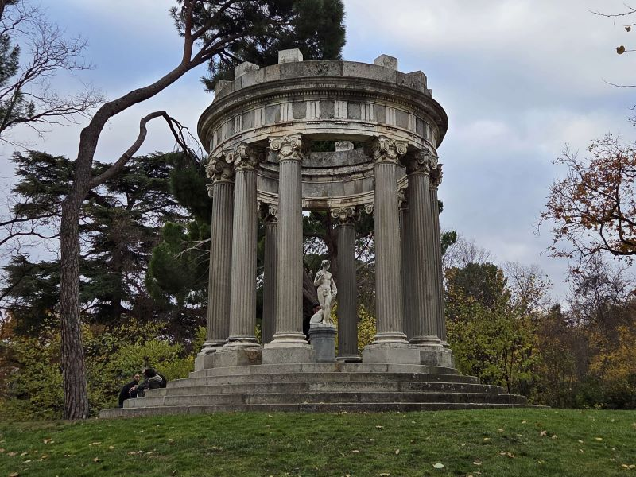
Jardín del Capricho
El Capricho is a park in Madrid. The word capricho is Spanish for "whim" or "caprice". It was created by María Josefa Pimentel, Duchess of Osuna on her estate at Alameda de Osuna, which was then outside the city of Madrid. Jardín del Capricho is listed among principal sites for Madrid within Spain.
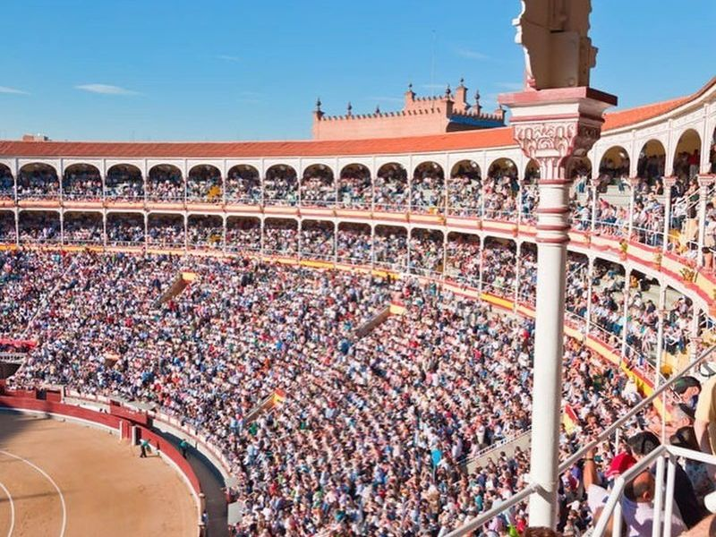
Las Ventas Bullring
Las Ventas Bullring, also known as Plaza de Toros Monumental de Las Ventas, is a historic bullfighting arena located east of central Madrid. Built in the 1920s in neo-Mudéjar style, it is considered the most important and prestigious bullring in the world. The venue hosts not only bullfights but also concerts and events. travellers can explore the fine Museo Taurino to gain insight into this Spanish tradition or simply admire the impressive architecture.
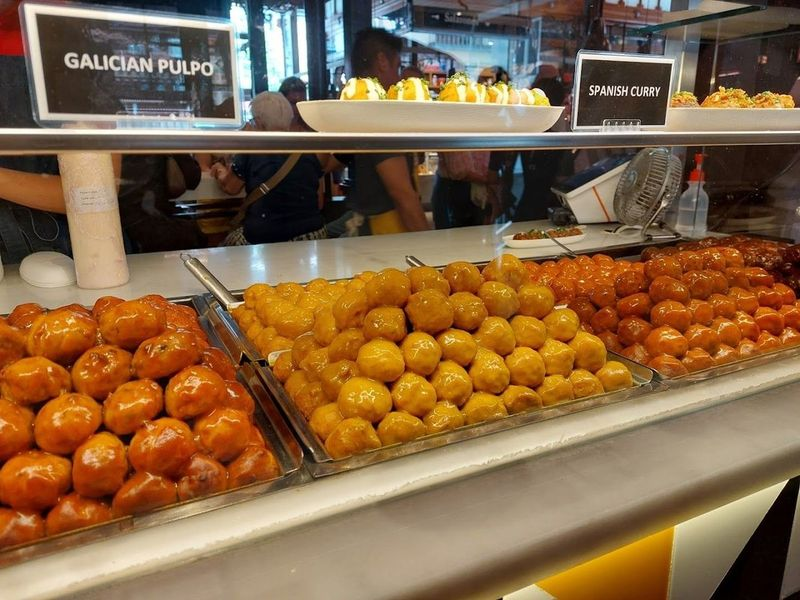
Mercado de San Miguel
Mercado de San Miguel, one of the oldest covered markets in Madrid, is a historic gourmet venue that offers a rich culinary experience. Originally built in 1916 and recently refurbished, this market features an array of food stalls offering premium Spanish produce such as fresh fruits, cured meats, fine wines, seafood, cheeses, and pastries. travellers can indulge in local specialties like olive and anchovy pinchos or fresh seafood while sipping on masterfully made sangria.
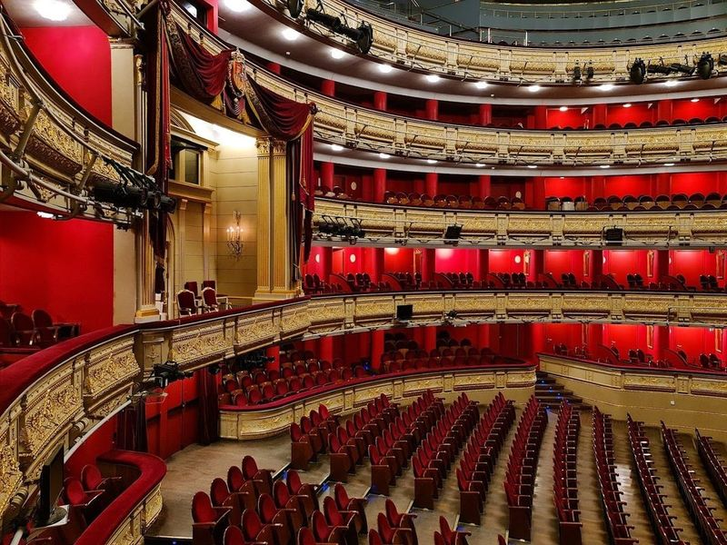
Teatro Real
Teatro Real, also known as El Real, is a prestigious opera house in central Madrid near the Palacio Real. Established in 1850 and extensively remodeled in the late 20th century, it offers a grand design with an auditorium that seats around 1,740 people. The venue hosts an impressive program of its own and international productions, classical music concerts, and dance performances.
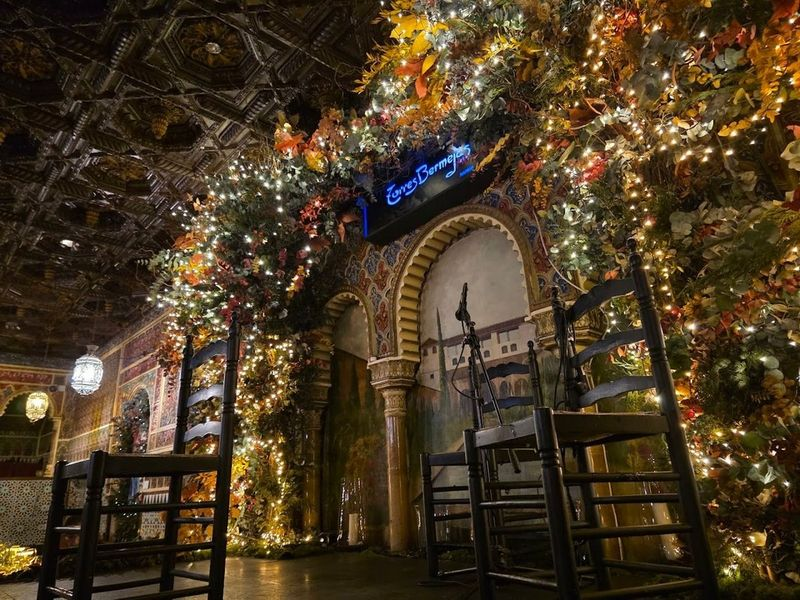
Tablao Flamenco Torres Bermejas
Tablao Flamenco Torres Bermejas is a renowned venue in Madrid that has been showcasing live flamenco performances since 1960. The establishment has hosted some of the Flamenco artists in Spain and attracted famous spectators, including members of Spanish nobility and television icons.
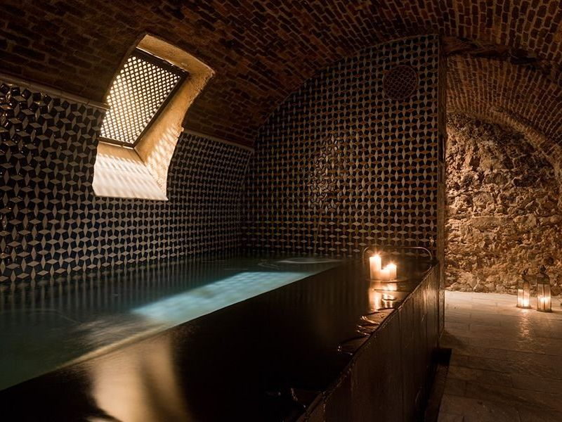
Hammam Al Ándalus Plaza Mayor
Hammam Al Ándalus is a luxurious thermal spa in Madrid, offering ornate bathing areas and massages with essential oils and hot stone beds. The Arabic baths feature hot, tepid, and cold pools, a Turkish steam room, an aromatic relaxation room, and massage rooms surrounded by Arabic architecture. The converted cellars house traditional Arab baths with a water circuit taking travellers through different temperature pools.
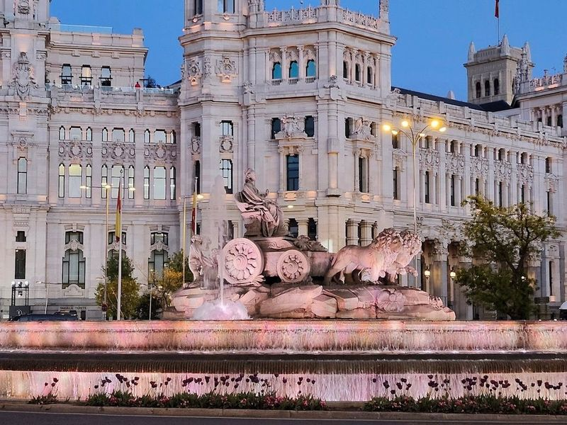
Cibeles Fountain
The Cibeles Fountain, also known as Fuente de Cibeles, is a renowned 18th-century neoclassical fountain located in the vibrant Plaza de Cibeles in Madrid. Designed by Ventura Rodriguez and sculpted by Francisco Gutierrez and Roberto Michel, this landmark features the goddess Cybele on a chariot pulled by two lions. The fountain represents the Roman goddess of fertility and nature holding the key to the city in her left hand.
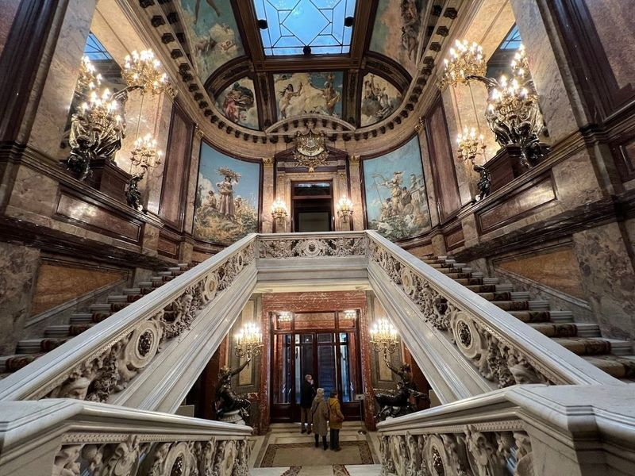
Linares Palace
Linares Palace, located in the Plaza de Cibeles, is a historic 19th-century palace with an ornate interior and a rich history. Built as the residence of the Marquises of Linares, it is now home to Casa de America and hosts various exhibitions and events. The palace is shrouded in mystery and ghost stories, adding to its allure. Guided tours are available on weekends, offering insights into the palace's history and legends.
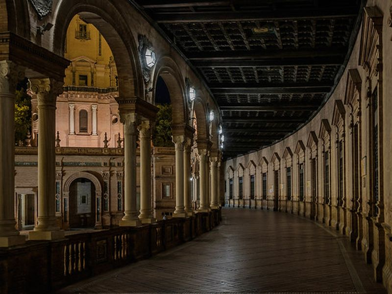
Plaza de España
A prominent square featuring a large monument to Miguel de Cervantes and impressive skyscrapers, offering a great spot for relaxation and photos. The site is catalogued as a square. Plaza de España is listed among principal sites for Madrid within Spain.
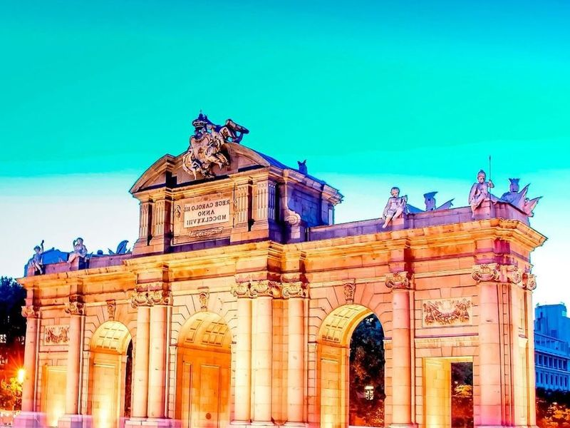
Puerta de Alcalá
Puerta de Alcalá is a triumphal arch located near Parque del Buen Retiro, adorned with elegant sculptures and stone carvings. It is one of the ancient gates that provided access to the city and is considered the precursor of famous triumphal arches in other cities. Commissioned by King Charles III in the late 18th century, this neoclassical monument was designed by Italian architect Francesco Sabatini.
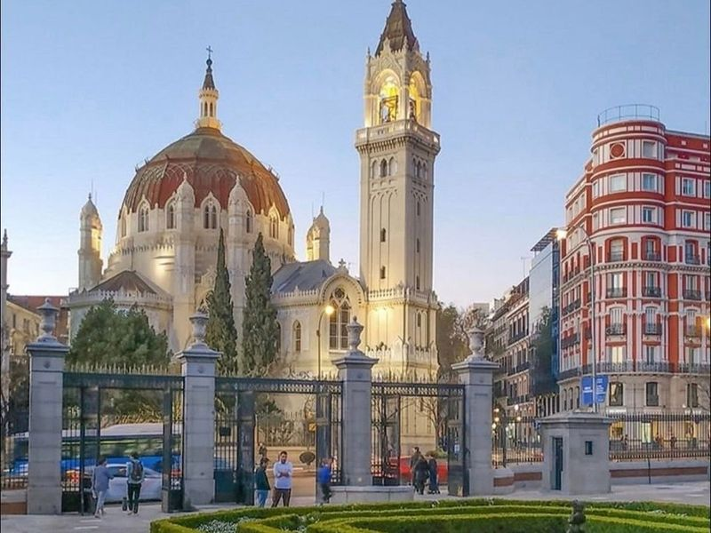
Church of Saint Manuel and Saint Benedict
The parish Church of Saint Manuel and Saint Benedict is a beautiful building built in Neo-Byzantine style. It is easy to recognize its beautiful tower and red copper dome, and its interior is rich in mosaics. The church is well worth visiting for its architecture alone, but it's also a peaceful place where reflect on the beauty of religion.
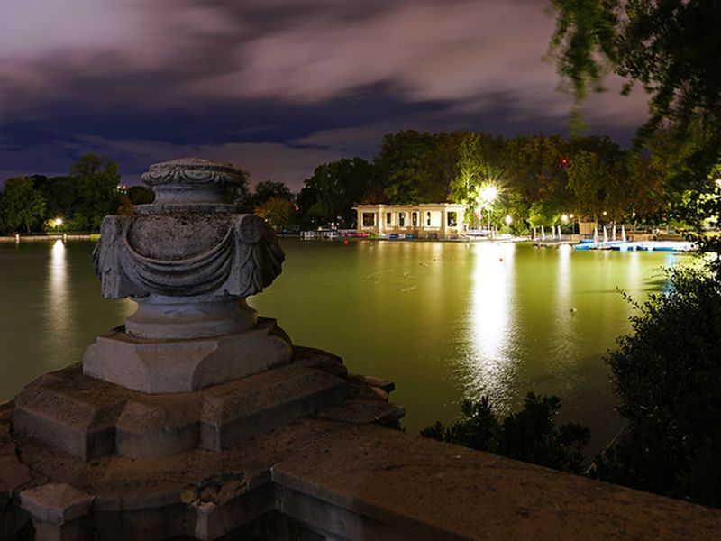
Great Pond of El Retiro
A central feature of El Retiro Park, where travellers can rent rowboats and enjoy the peaceful surroundings. The site is catalogued as a tourist attraction. Great Pond of El Retiro is listed among principal sites for Madrid within Spain. Municipal and regional heritage listings document its place in the historic centre and visitor routes through Madrid.
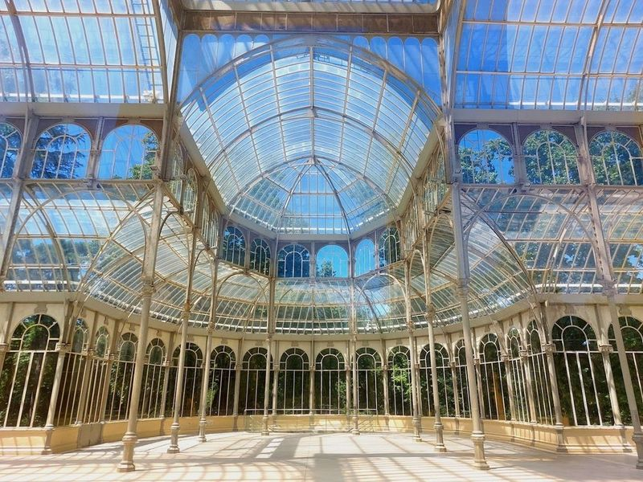
Palacio de Cristal
Palacio de Cristal, also known as the Crystal Palace, is a attraction In Retiro Park in Madrid. This and photogenic spot was inspired by London's Crystal Palace and is a conservatory made entirely of glass. Built in 1887, it was originally designed to showcase native plants and objects from the Philippines during Spain's colonial period.
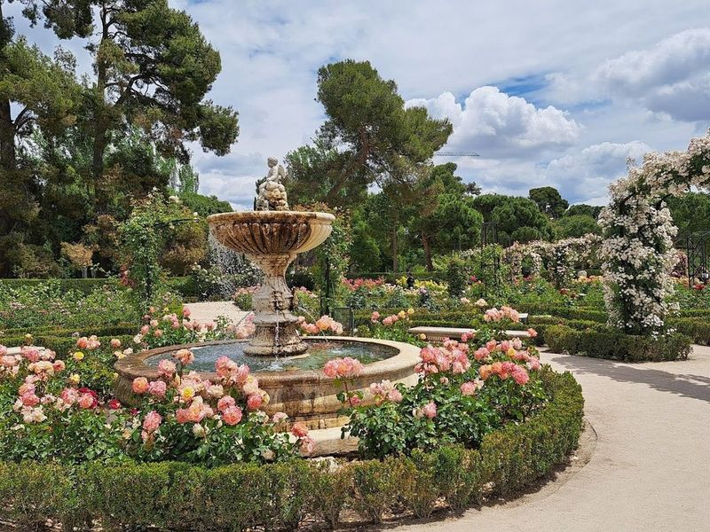
Rose Garden
Nestled within the Parque del Oeste in Madrid, the Rose Garden is a serene and romantic oasis featuring thousands of rose bushes, stone fountains, ponds, and arbors. This picturesque corner of the park is perfect for a leisurely stroll or even a first kiss. The garden comes alive in May when the roses are in full bloom, but it's enchanting any time of year.
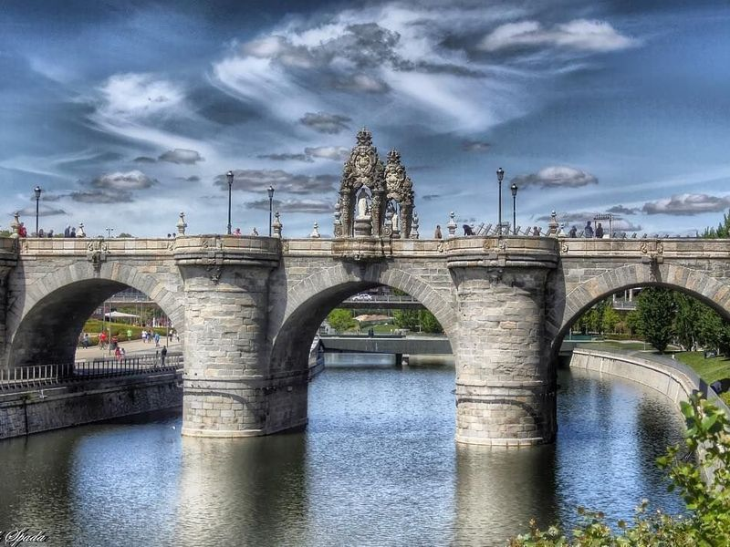
Puente de Toledo
Toledo Bridge, also known as Puente de Toledo, is a restored baroque-style pedestrian bridge that crosses the Manzanares River in Madrid. Constructed between 1719 and 1724 by Pedro de Ribera, this 180-meter-long bridge offers views of the surrounding area. The bridge is particularly enchanting at sunset, providing a romantic and picturesque setting for reflection and relaxation.
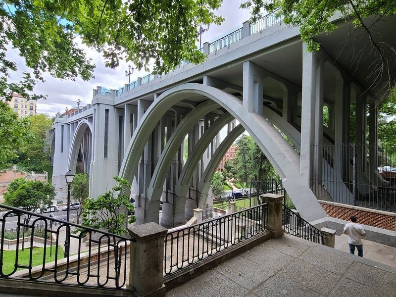
Historic Segovia Bridge
The Segovia Bridge, dating back to the 1580s, is a historic landmark in Madrid. It offers views of the river and surrounding attractions such as La Almudena Cathedral, the Royal Palace, and Plaza de Espanas. The bridge is located near the ancient city of Segovia, known for its Roman aqueduct and UNESCO World Heritage Site status. travellers can enjoy picnics in the adjacent riverfront park with lush greenery and fountains.
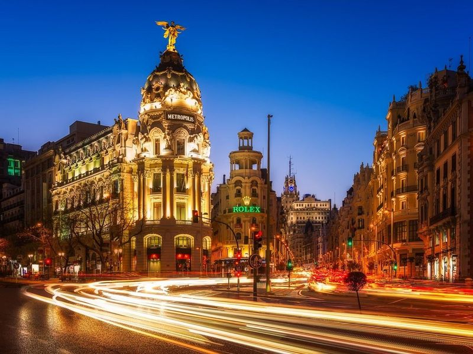
Gran Vía
Gran Vía is a must-visit avenue in Madrid, renowned for its early-20th-century architecture and vibrant atmosphere. This street serves as a central hub, connecting the historic heart of the city with modern districts. Along Gran Vía, find an array of retail shops, delightful restaurants, and lively bars that cater to all tastes.
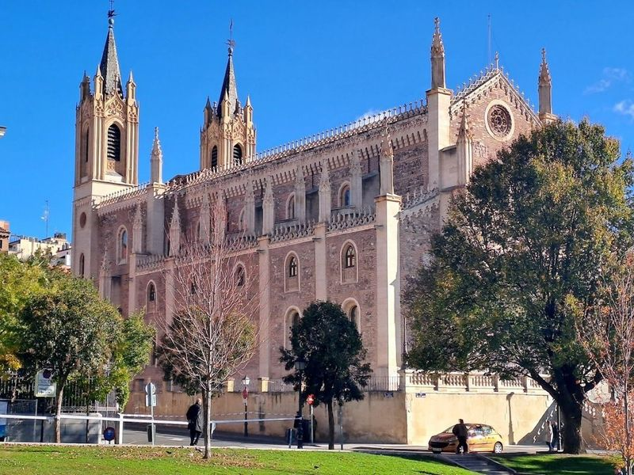
Iglesia de San Jerónimo el Real
The Church of San Jerónimo el Real, also known as Los Jeronimos, is a historic 16th-century church located near the Prado Museum in Madrid. Originally a monastery ordered by Queen Isabella the Catholic, it has witnessed significant events in Spanish history. The architecture reflects Elizabethan Gothic style with beautiful side chapels and a baroque cloister. Despite undergoing various changes over the centuries, it remains one of the few late Gothic buildings in Madrid.
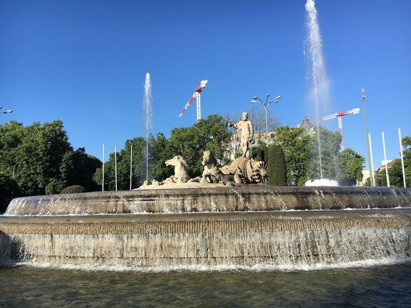
Neptune Fountain
Nestled in the heart of Plaza Canovas del Castillo, the Fountain of Neptune is a neoclassical masterpiece that captures the essence of 18th-century artistry. Designed by architect Ventura Rodriguez and completed in 1782, this magnificent fountain features Neptune himself, majestically seated on a shell-shaped chariot drawn by two powerful sea horses. Surrounded by playful dolphins and seals, it stands as a symbol of Madrid's rich cultural heritage.
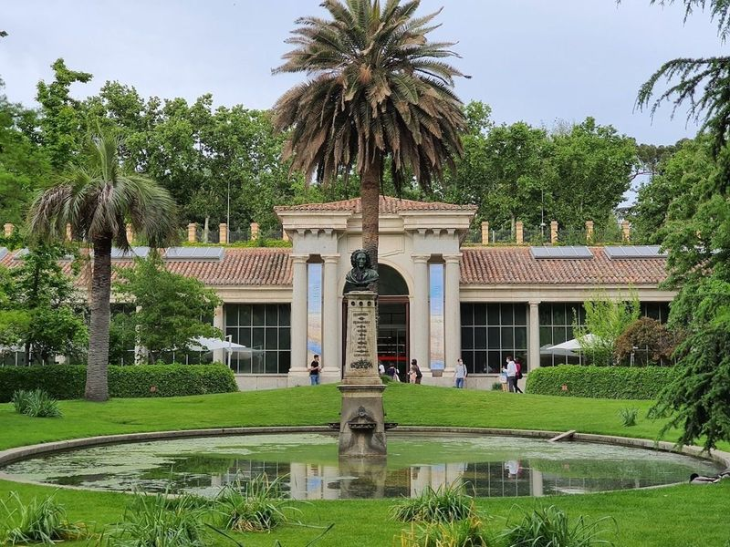
Real Jardín Botánico
Real Jardín Botánico, also known as the Royal Botanical Garden, is a historic botanical garden located next to the Prado Museum in Madrid. Established in the 18th century, it features three terraces showcasing around 6,000 plant species from around the world. travellers can enjoy guided tours that delve into the garden's history and cultivation techniques. The garden includes various themed zones such as a Mediterranean garden, tropical garden, and medicinal plant garden.
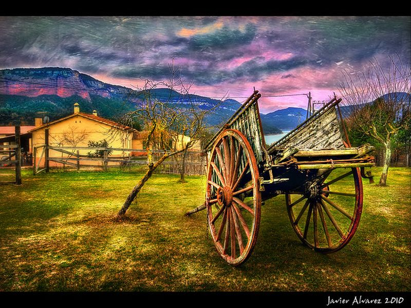
Casa de Campo
Madrid's largest public park, offering a wide range of outdoor activities including boating, cycling, and visiting the amusement park and zoo. The site is catalogued as a tourist attraction. Casa de Campo is listed among principal sites for Madrid within Spain.
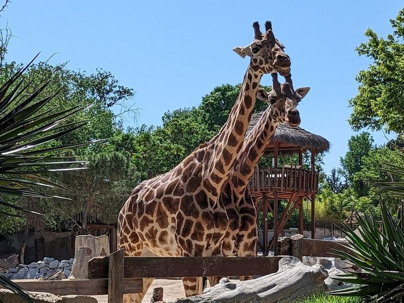
Zoo Aquarium de Madrid
Zoo Aquarium de Madrid is a vast facility featuring animals in their natural habitats, a dolphinarium, and a shark tank. It also includes a petting zoo for kids. Additionally, travellers can enjoy various attractions within its grounds such as the Parque de Atracciones amusement park and Lago, a beautiful location for lunch. The zoo can be accessed via cable cars from Parque Oeste or by taking the metro to Principe Pio and walking across the river.
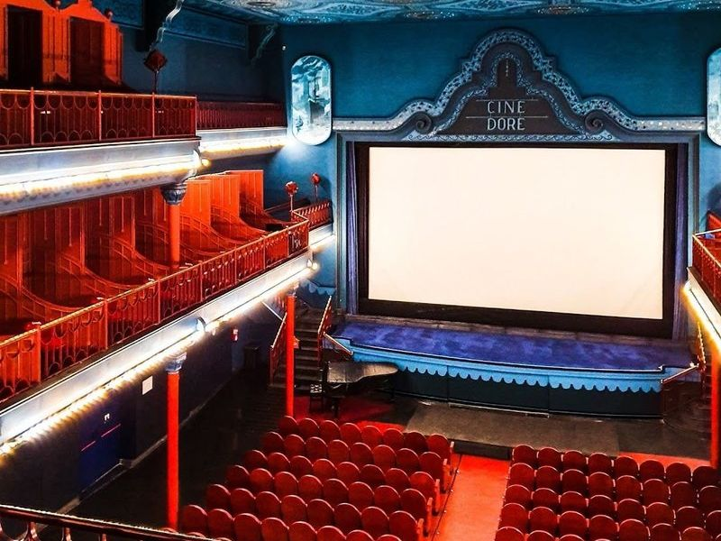
Cine Doré
The Cine Doré is an old movie theater in Madrid that specializes in classic and new films. It is home to the Filmoteca Espanola, a ministry of culture institution that restores and preserves old films. This cinema has been featured in a few Pedro Almodovar movies. It's always open and offers great value for your money - just 2.50 a ticket!.
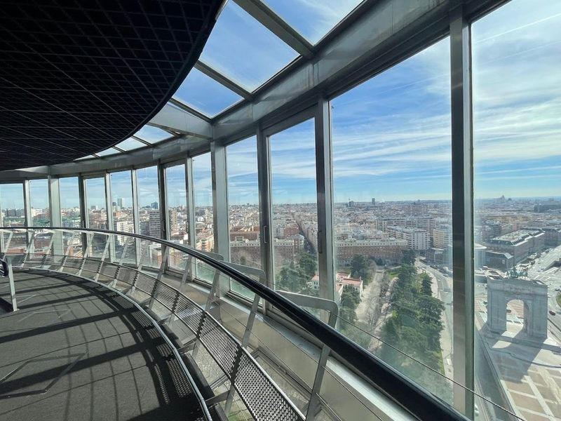
Moncloa's Lighthouse
Moncloa's Lighthouse, built in 1992, was a former transmission tower that now features an observation deck and information panels. At 110 meters high, the lighthouse offers a 360-degree panoramic view of Madrid. travellers can access the observation deck for a nominal fee and enjoy the cityscape. The lighthouse is known for its efficient service and clean facilities.
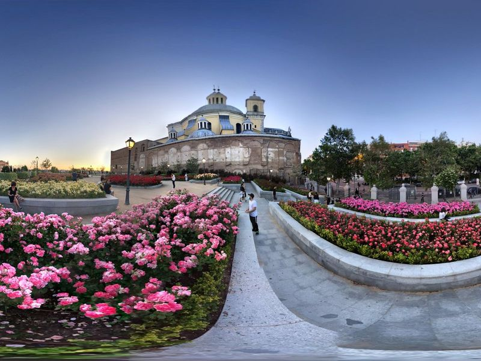
Royal Basilica of Saint Francis the Great
The Royal Basilica of Saint Francis the Great, In Madrid's La Latina neighborhood, is an impressive neoclassical basilica with a vast frescoed dome and chapel adorned with paintings by renowned artists such as Goya and Zurbaran. This National Monument, built in 1784 by Sabatini, boasts a 33-meter diameter dome that dominates the skyline. The basilica also houses a valuable collection of religious art and marble sculptures.
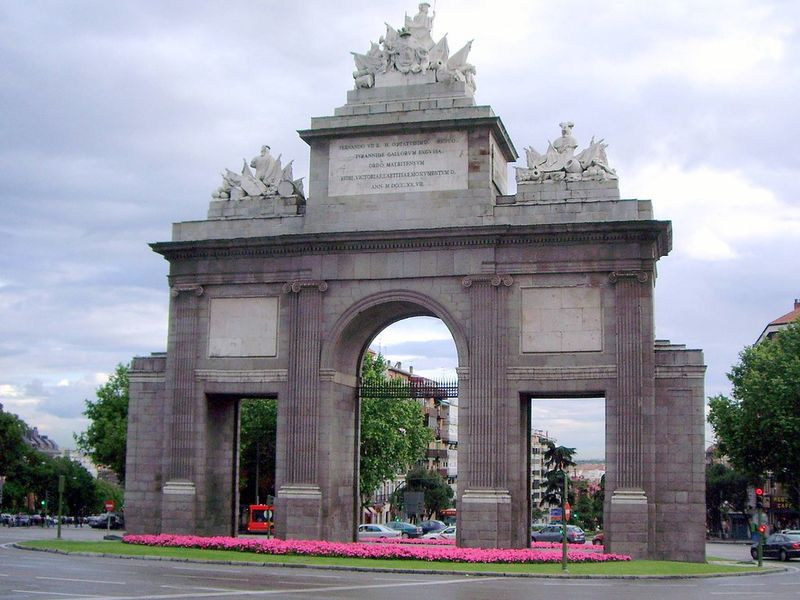
Toledo Gate
The site is catalogued as a tourist attraction. Toledo Gate is listed among principal sites for Madrid within Spain. Municipal and regional heritage listings document its place in the historic centre and travellers routes through Madrid. The site is catalogued as a tourist attraction.
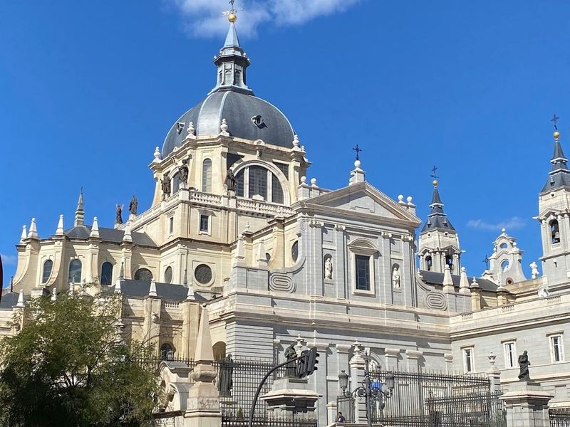
Catedral de Santa María la Real de la Almudena
Nestled right across from the majestic Royal Palace, the Catedral de Santa María la Real de la Almudena stands as a testament to Madrid's rich architectural heritage. This Baroque Catholic cathedral, which took over a century to complete—beginning in 1883 and finishing in 1993—boasts an impressive blend of neo-Gothic and neo-Romanesque styles. Inside, travellers are greeted by vibrant chapels adorned with exquisite stained glass windows that illuminate the space beautifully.